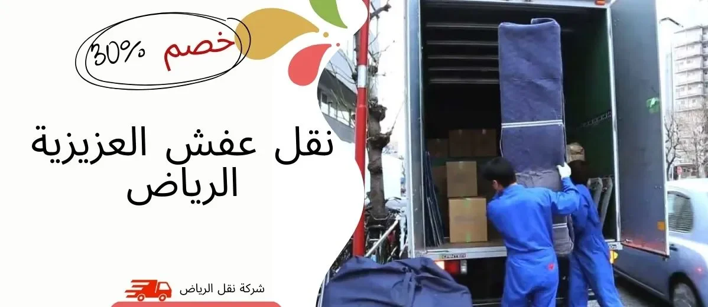

نقل عفش العزيزية الرياض

يتطلب نقل عفش العزيزية الرياض خدمة عالية الجودة واحترافية لضمان نقل الأثاث بأمان وسرعة، حيث تعد شركة نقل الرياض من الشركات الرائدة في تقديم خدمات نقل العفش في منطقة العزيزية بكل سهولة واحترافية، حيث تقدم خدمات متكاملة تتراوح بين التعبئة والتغليف والنقل والتركيب، كما يتمتع فريق العمل بالخبرة الكافية للتعامل مع جميع أنواع الأثاث وتوفير حلول مخصصة تلائم احتياجات العملاء.
نقل عفش العزيزية الرياض
تبحث عن شركة نقل عفش بالرياض التي تقدم خدمات متميزة في نقل الأثاث من وإلى العزيزية بالرياض، والتي تقوم باستخدام الشركة تقنيات حديثة ومواد تغليف عالية الجودة لحماية الأثاث أثناء النقل، كما يوفر فريق العمل المحترف خدمة فك وتركيب الأثاث بأسلوب دقيق وآمن لضمان سلامة الأثاث أثناء النقل، علاوة على ذلك تضمن الشركة تقديم خدمات تنافسية من حيث التكلفة مع الحفاظ على مستوى عالي من الخدمة، كما أن شركتنا توفر للعملاء تأمينًا للأثاث أثناء عملية النقل لتوفير الراحة والاطمئنان، فـ هي تعتمد على أسطول من السيارات المجهزة خصيصًا للنقل الآمن للأثاث بين الرياض والعزيزية، تعتبر كل هذه العوامل هي من جعلت شركة نقل الرياض الخيار المثالي للأفراد الذين يبحثون عن نقل آمن وموثوق لأثاثهم.
نقل عفش العزيزية الرياض
تعتبر خدمات نقل الأثاث في العزيزية بالرياض من أكثر الخدمات التي يبحث عنها أهل المملكة العربية السعودية، ومع تعدد شركات النقل المتخصصة، يبرز أسم شركة نقل الرياض كأفضل خيار للراغبين في الحصول على خدمات احترافية وموثوقة وهذا بناءً على أراء عملائنا الكرام، حيث تقدم الشركة خدمات متميزة في نقل الأثاث تشمل التعبئة والتغليف باستخدام مواد عالية الجودة لضمان حماية الأثاث أثناء النقل، بالإضافة إلى فريق العمل المدرب الذي يتعامل مع كل قطعة من الأثاث بعناية شديدة لضمان نقلها بأمان، وتوفر الشركة أيضًا خدمة فك وتركيب الأثاث بشكل احترافي، مما يسهل على العملاء عملية النقل بشكل كامل.
تواصل الآن لخدمة نقل العفش
مميزات شركة نقل عفش العزيزية الرياض
- استخدام مواد تغليف عالية الجودة.
- فريق عمل مدرب ومحترف في التعامل مع الأثاث.
- توفير خدمة فك وتركيب الأثاث.
- أسطول سيارات مجهز للنقل الآمن.
- تأمين الأثاث أثناء عملية النقل.
- أسعار تنافسية مع خدمات متميزة.
- تقديم استشارات وخدمات مخصصة لاحتياجات العملاء.
شركة نقل عفش العزيزية الرياض
شركة نقل الرياض في العزيزية بالرياض تقدم خدمات نقل أثاث احترافية ومتميزة تناسب جميع احتياجات العملاء. تتميز الشركة بخبرة واسعة في مجال نقل الأثاث بين المنازل والشركات، وتضمن نقل الأثاث بكل أمان ودقة. فريق العمل المتخصص في الشركة يحرص على تعبئة وتغليف الأثاث باستخدام مواد عالية الجودة لحمايته من أي ضرر أثناء النقل. بالإضافة إلى ذلك، توفر الشركة خدمات فك وتركيب الأثاث بكل احترافية لتسهيل عملية النقل. تتميز شركة نقل الرياض بسرعة استجابتها ومرونتها في تقديم الخدمات التي تتناسب مع احتياجات العملاء، مع تقديم حلول مخصصة لنقل الأثاث بين مختلف الأماكن في العزيزية وما حولها. كما أنها تسعى لتقديم أسعار تنافسية وخدمات ذات جودة عالية لضمان راحة العملاء وتحقيق رضاهم التام. في حال كنت بحاجة إلى نقل أثاثك في العزيزية، تعتبر شركة نقل الرياض الخيار الأمثل.
أهمية شركات نقل العفش
تتمثل أهمية شركات نقل عفش العزيزية الرياض أهمية كبيرة للغاية، فـ هي تقوم بتوفير خدمات متخصصة تضمن نقل الأثاث بأمان وفعالية، كما أنها تلعب دورًا محوريًا في تسهيل عملية الانتقال من مكان إلى آخر، فهذه الشركات لا تقتصر فقط على نقل الأثاث، بل تشمل أيضًا تعبئته، تغليفه، وفكه وتركيبه بأعلى معايير الجودة، ومن أبرز هذه الشركات هي شركة نقل عفش العزيزية الرياض من خلال استخدامها أحدث التقنيات المتقدمة والأدوات المناسبة، تضمن الشركات عدم تعرض الأثاث للتلف أو الخدش أثناء النقل، مما يوفر راحة البال للعملاء.
بالإضافة إلى ذلك تتمتع شركات النقل بالكفاءة العالية في تنظيم عمليات النقل، مما يسهم في توفير الوقت والجهد على العملاء الكرام، فهي تقوم بتنسيق كافة جوانب النقل بدءًا من ترتيب الأثاث وصولًا إلى تركيبه في المكان الجديد، وتوفر هذه الشركات أيضًا خدمات التأمين، مما يتيح للعملاء الشعور بالاطمئنان أثناء عملية النقل، حيث تكون الأضرار المحتملة مغطاة.
في حال كان الانتقال بين المدن، فإن شركات النقل تتمتع بخبرة كبيرة في تنظيم شحن الأثاث بشكل سريع وآمن، مما يساهم في تقليل التكلفة وتوفير خدمات مميزة.
نقل الاثاث المنزلي والعفش
تعتبر عملية نقل الأثاث المنزلي والعفش واحدة من العمليات المهمة التي تتطلب اهتمامًا خاصًا، حيث يتعين نقل العناصر الثقيلة والقيّمة بعناية كبيرة لضمان سلامتها، كما يشمل نقل الأثاث المنزلي تغليف جميع العناصر داخل المنزل مثل الأسرة، والأرائك، والطاولات، والخزائن، وكذلك أيضًا الأجهزة المنزلية مثل الثلاجات والغسالات، حيث أن هذه العملية تتطلب مهارات متخصصة في التفكيك والتركيب والحفاظ على الأثاث خلال عملية النقل.
من الضروري أيضًا أن يتم استخدام مواد تغليف آمنة وفعالة لحماية الأثاث أثناء نقله من مكان إلى آخر، من أهم هذه المواد هي الأغطية البلاستيكية، الفلين، ورق التغليف، والصناديق المتينة، والتي تحمي الأثاث من الخدوش والتلف، وبالاخير يتم استخدام عربات النقل المناسبة والشاحنات التي تحتوي على مساحات مناسبة لحمل الأثاث دون تعرضه لأي ضغط أو أضرار.
تقدم هذه شركة نقل عفش العزيزية الرياض خدمات أخرى مثل الفك والتركيب وتغليف الأثاث، مما يجعل العملية أكثر سلاسة ويسرًا، كل هذه المميزات تساعد في تنفيذ المهمة بشكل احترافي، إذا كانت الشركة تمتلك الخبرة والأدوات اللازمة لضمان سلامة العفش طوال فترة النقل.
خطوات تغليف ونقل الأثاث
- التفكيك: تبدأ العملية بتفكيك الأثاث الكبير مثل الأسرة والطاولات والخزائن لتسهيل نقله.
- التغليف: يتم استخدام أفضل مواد التغليف مثل الأغطية البلاستيكية، الفلين، وصناديق قوية لحماية الأثاث من الخدوش والأضرار.
- ترتيب الأثاث داخل الشاحنة: يتم ترتيب الأثاث في الشاحنة بطريقة مدروسة لتجنب التحرك الزائد.
- النقل: يتم نقل الأثاث بعناية باستخدام الشاحنات المناسبة والتأكد من تثبيت الأثاث بشكل جيد لضمان عدم تعرضه لأي ضرر.
- إعادة التركيب: بعد الوصول إلى الوجهة، يتم إعادة تركيب الأثاث بشكل دقيق وفقًا لتعليمات المصنع أو حسب رغبة العميل.
تعتبر كل هذه الخطوات أساسية لضمان نقل الأثاث بأمان والحفاظ عليه بحالة ممتازة طوال فترة النقل.
الأسئلة الشائعة حول نقل عفش العزيزية الرياض
ما هي أهم الخدمات التي تقدمها شركة نقل الرياض في العزيزية؟
تقدم شركة نقل الرياض مجموعة من الخدمات المتكاملة، حيث تشمل تعبئة الأثاث، تفكيك وتركيب الأثاث، استخدام مواد تغليف عالية الجودة، ونقل الأثاث بأمان، بالإضافة إلى أنها توفر تأمينًا على الأثاث خلال النقل وتقديم أسطول من السيارات المجهزة لهذا الغرض، مما يضمن نقل الأثاث بأعلى مستويات الأمان والاحترافية.
هل تقدم شركة نقل الرياض خصومات أو عروض على خدمات النقل؟
نعم، تقدم شركة نقل الرياض عروضًا وخصومات على خدمات النقل من وإلى العزيزية بالرياض، تصل إلى 30% حيث يمكن للعملاء الاستفادة من هذه العروض لتقليل التكاليف مع الحفاظ على مستوى الخدمة العالي.
في النهاية تعد شركة نقل عفش بالعزيزية الرياض هي الخيار الأفضل لنقل الأثاث، وهذا بفضل خدماتها الشاملة والمتكاملة والمميزة فـ من خلال استخدام تقنيات متقدمة وفريق عمل محترف، تضمن الشركة لعملائها الحصول على تجربة نقل مريحة وآمنة، كما أن بفضل خبرتها الطويلة في هذا المجال تقدم نقل الرياض حلولًا مخصصة تناسب احتياجات العملاء وتضمن الحفاظ على الأثاث أثناء عملية النقل، ولهذا إذا كنت تبحث عن نقل أثاث موثوق وآمن، فإن شركة نقل الرياض هي الاختيار الأمثل.